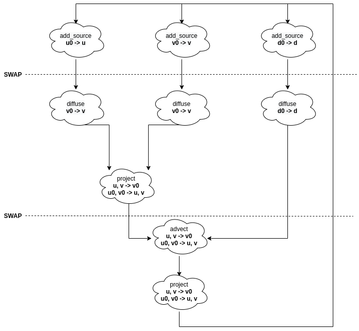
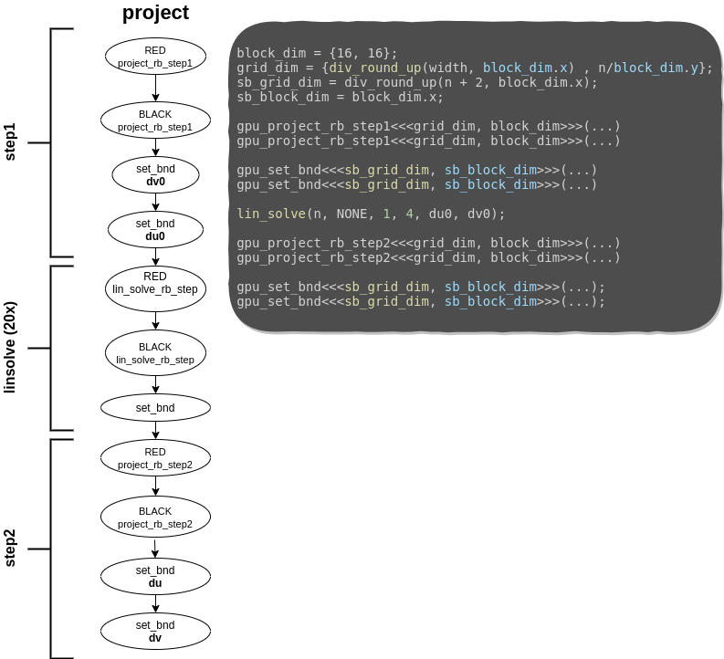
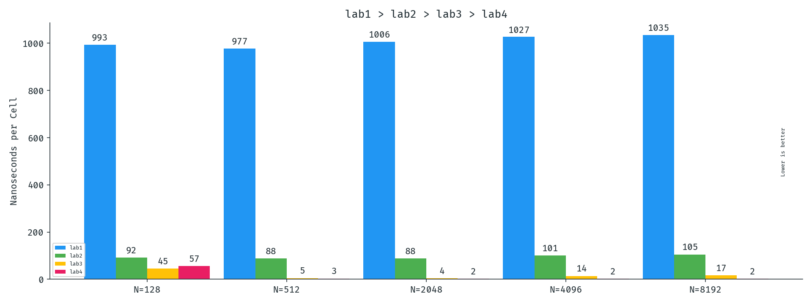

class: center, middle # Lab 4 - Cuda Parallel Computing Mateo de Mayo - Benjamín Ocampo --- class: center, middle ## Migration: from CPU to GPU --- # Migration: from CPU to GPU In order to put our hands over the work and looking up optimizations, we needed to migrate all our implementation to Cuda code. Remember that the simulation consists of a number of updates or steps **Simulation Step** - *react* - *step*: - *addsource* - *diffuse* - *project* - *advect* --- ## Migration: from CPU to GPU The migration process consisted in implementing them one by one, and checking if the simulation keeps well after it. Everything was performed incrementaly, synchronizing with the device and the host. But it was momentary until the migration was fully-implemented. It might be thought as the device "asking for help to the host", since it can not handle the th the functions. --- ## Migration: from CPU to GPU **Our Goal**: Launch the entire program to the GPU at the beggining (**fullburst**), and synchronize at the end of the simulation. Then, measures will be normalized at that point. **Things that were on mind during the process:** - changes of signatures - makefile rules - deletion of omp pragma - new includes - differences between device and host data. - synchronizations (by means of kernels) --- class: center, middle # reactburst --- # reactburst The first version of this lab! It was called *reactburst* since *step* was computed by the GPU, but *react* was still performed by the CPU (without changes from the lab 3), i.e, first *react*, then burst of kernels. In order to do so, we had to deal with the migration of *step*. --- # reactburst <div align="center">  </div> - We had to decide which cloud might be a kernel and which one might be just a host function that launches other kernels. --- # reactburst: add_source In this case was straighforward, since *add_source* is not a complex function and *diffuse* can not start without the previous execution of *add_source*. It was converted into a kernel. --- # reactburst: diffuse <div align="center"> <img src="res/migration_imgs/diffuse.png" alt="graph-dependency" style="width:700px;" /> </div> - Three kernel launches for each iteration. - Implicit synchronizations with kernels. - block_dim was chosen according to the hardware. - grid_dim was chosen according to the problem. - gpu_set_bnd is launched in one dimension. --- # reactburst: project <div align="center">  </div> --- # reactburst: advect <div align="center"> <img src="res/migration_imgs/advect.png" alt="graph-dependency" style="width:650px;" /> </div> --- # reactburst: kernels ```c __global__ void gpu_lin_solve_rb_step(grid_color color, unsigned int n, float a, float c, const float *__restrict__ same0, const float *__restrict__ neigh, float *__restrict__ same) { ... // assignments const int grid_width = gridDim.x * blockDim.x; const int grid_height = gridDim.y * blockDim.y; const int gtidx = blockIdx.x * blockDim.x + threadIdx.x; const int gtidy = blockIdx.y * blockDim.y + threadIdx.y; for (int y = 1 + gtidy; y <= n; y += grid_height) { for (int x = start + gtidx; x < width - (1 - start); x += grid_width) { int index = y * width + x; same[index] = (same0[index] + a * ( neigh[index - width] + neigh[index - start] + neigh[index - start + 1] + neigh[index + width] )) / c; } } } ``` - For each kernel, grid stride loop was used. - looping over the grids, working with the global id of each thread related to the current grid that we are working. - project and advect are similar. --- # reactburst: kernels ```c __global__ void gpu_set_bnd(unsigned int n, boundary b, float *x) { const int grid_width = gridDim.x * blockDim.x; const int gtid = blockIdx.x * blockDim.x + threadIdx.x; for (unsigned int i = 1 + gtid; i <= n; i += grid_width) { x[IX(0, i)] = b == VERTICAL ? -x[IX(1, i)] : x[IX(1, i)]; x[IX(n + 1, i)] = b == VERTICAL ? -x[IX(n, i)] : x[IX(n, i)]; x[IX(i, 0)] = b == HORIZONTAL ? -x[IX(i, 1)] : x[IX(i, 1)]; x[IX(i, n + 1)] = b == HORIZONTAL ? -x[IX(i, n)] : x[IX(i, n)]; } if(gtid == 0) { x[IX(0, 0)] = 0.5f * (x[IX(1, 0)] + x[IX(0, 1)]); x[IX(0, n + 1)] = 0.5f * (x[IX(1, n + 1)] + x[IX(0, n)]); x[IX(n + 1, 0)] = 0.5f * (x[IX(n, 0)] + x[IX(n + 1, 1)]); x[IX(n + 1, n + 1)] = -0.5f * (x[IX(n, n + 1)] + x[IX(n + 1, n)]); } } ``` - Again, grid stride loop over 1 dimension. - border cases were handled by just one thread (*gtid = 0*). --- # reactburst: pitfalls ```c react(hd_prev, hu_prev, hv_prev); checkCudaErrors(cudaMemcpy(dd_prev, hd_prev, size_in_m,cudaMemcpyHostToDevice)); checkCudaErrors(cudaMemcpy(du_prev, hu_prev, size_in_m, cudaMemcpyHostToDevice)); checkCudaErrors(cudaMemcpy(dv_prev, hv_prev, size_in_m, cudaMemcpyHostToDevice)); step(N, diff, visc, dt, dd, du, dv, dd_prev, du_prev, dv_prev, from, to); checkCudaErrors(cudaDeviceSynchronize()); checkCudaErrors(cudaMemcpy(hd_prev, dd_prev, size_in_m, cudaMemcpyDeviceToHost)); checkCudaErrors(cudaMemcpy(hu_prev, du_prev, size_in_m, cudaMemcpyDeviceToHost)); checkCudaErrors(cudaMemcpy(hv_prev, dv_prev, size_in_m, cudaMemcpyDeviceToHost)); ``` - *react* is computed by the host. - We can not avoid a synchronization and copies from host to device at that point for each simulation step. --- class: center, middle # threactburst --- # threactburst Obviously, the bottleneck of *reactburst* is how *react* is computed. So let us get deep into that function to see what can be done to make it faster. --- # threactburst: before optimizing ```c // Two reductions for (i = 0; i < size; i++) { if (max_velocity2 < uu[i] * uu[i] + vv[i] * vv[i]) { max_velocity2 = uu[i] * uu[i] + vv[i] * vv[i]; } if (max_density < d[i]) { max_density = d[i]; } } // Memsets for (i = 0; i < size; i++) { uu[i] = vv[i] = d[i] = 0.0f; } ``` - Two reductions to be handled. - Use of memset instead of loops. --- # threactburst: before optimizing ```c // Do something with the reductions. if (max_velocity2 < 0.0000005f) { uu[IX(N / 2, N / 2)] = force * 10.0f; vv[IX(N / 2, N / 2)] = force * 10.0f; for (int y = 64; y < N; y += 64) for (int x = 64; x < N; x += 64) { uu[IX(x, y)] = force * 1000.0f * (N / 2 - y) / (N / 2); vv[IX(x, y)] = force * 1000.0f * (N / 2 - x) / (N / 2); } } if (max_density < 1.0f) { d[IX(N / 2, N / 2)] = source * 10.0f; for (int y = 64; y < N; y += 64) for (int x = 64; x < N; x += 64) d[IX(x, y)] = source * 1000.0f; } ``` - Read and writes that can be done by the GPU. --- # threactburst: Reductions ```c // Reduction 1 dfloatp tdd_prev(dd_prev); float max_density = *thrust::max_element(tdd_prev, tdd_prev + size); // Implicit cudaDeviceSynchronize(); ``` --- # threactburst: Reductions ```c // Reduction 2 struct compare_dfloatp2 { __device__ bool operator()(tfloat2 lhs, tfloat2 rhs) { float lu = lhs.get<0>(); float lv = lhs.get<1>(); float ru = rhs.get<0>(); float rv = rhs.get<1>(); return lu * lu + lv * lv < ru * ru + rv * rv; } }; zip_iterator<dfloatp2> uvs_begin = make_zip_iterator( make_tuple(du_prev, dv_prev) ); zip_iterator<dfloatp2> uvs_end = make_zip_iterator( make_tuple(du_prev + size, dv_prev + size) ); zip_iterator<dfloatp2> zmaxvel2 = max_element( uvs_begin, uvs_end, compare_dfloatp2() ); // Implicit cudaDeviceSynchronize(); dfloatp2 mv2 = zmaxvel2.get_iterator_tuple(); float mvu = *mv2.get<0>(); float mvv = *mv2.get<1>(); float max_velocity2 = mvu * mvu + mvv * mvv; ``` --- # threactburst: launches and memsets ```c // Memsets and kernel launches size_t size_in_mem = size * sizeof(float); checkCudaErrors(cudaMemset(du_prev, 0, size_in_mem)); checkCudaErrors(cudaMemset(dv_prev, 0, size_in_mem)); checkCudaErrors(cudaMemset(dd_prev, 0, size_in_mem)); dim3 block_dim{16, 16}; // The gridblock mapping is one thread per reactionary point dim3 grid_dim{ div_round_up(div_round_up(N, 64), block_dim.x), div_round_up(div_round_up(N, 64), block_dim.y) }; if (max_velocity2 < 0.0000005f) gpu_react_velocity<<<grid_dim, block_dim>>>(du_prev, dv_prev, force, N); if (max_density < 1.0f) gpu_react_density<<<grid_dim, block_dim>>>(dd_prev, source, N); } ``` - Note: We are not dealing with how react and step communicate, so those copies that were shown before are still here in *threactburst*. --- class: center, middle # stepburst --- ## stepburst It is time to make copies between react and step dissapear! ```c for (i = 0; i < steps; i++) one_step(); // Copies are placed at the end checkCudaErrors(cudaDeviceSynchronize()); checkCudaErrors(cudaMemcpy(hd, dd, size_in_mem,cudaMemcpyDeviceToHost)); checkCudaErrors(cudaMemcpy(hu, du, size_in_mem,cudaMemcpyDeviceToHost)); checkCudaErrors(cudaMemcpy(hv, dv, size_in_mem,cudaMemcpyDeviceToHost)); checkCudaErrors(cudaMemcpy(hd_prev, dd_prev, size_in_mem,cudaMemcpyDeviceToHost)); checkCudaErrors(cudaMemcpy(hu_prev, du_prev, size_in_mem,cudaMemcpyDeviceToHost)); checkCudaErrors(cudaMemcpy(hv_prev, dv_prev, size_in_mem,cudaMemcpyDeviceToHost)); ``` - In this version, a bunch of kernels launches are queued up to the thrust synchronization. - Copies were moved at the end of the simulation. - *react* and *step* use memory that is on the device. So, the CPU does not do more than just launch kernels. - If it were not for the thrust pitfalls this one would be the *fullburst* version that we were aiming for. --- class: center, middle # reactburst VS threactburst VS stepburst --- # Results <div align="center"> </div> --- class: center, middle # Failed Versions: fullburst --- # fullburst ```c // zip_iterator<dfloatp2> uvs_begin = make_zip_iterator( // make_tuple(du_prev, dv_prev) // ); // zip_iterator<dfloatp2> uvs_end = make_zip_iterator( // make_tuple(du_prev + size, dv_prev + size) // ); // zip_iterator<dfloatp2> zmaxvel2 = max_element( // uvs_begin, // uvs_end, // compare_dfloatp2() // ); // dfloatp2 mv2 = zmaxvel2.get_iterator_tuple(); // float mvu = *mv2.get<0>(); // float mvv = *mv2.get<1>(); // float max_velocity2 = mvu * mvu + mvv * mvv; float max_velocity2 = 0.1f; // dfloatp tdd_prev(dd_prev); // float max_density = *thrust::max_element(tdd_prev, tdd_prev + size); float max_density = 0.1f; ``` - Erasing reductions in such a way thrust does not block the entire burst of launches - We uncovered that the number of kernel launches that can be queued is limited to around 1024. - Cub allows reductions without blocking so that implies that react had to be implemented again. Fortunately, we discovered it before that. --- class: center, middle # Failed Versions: streamburst --- # streamburst ```c static cudaStream_t streams[32768]; static cudaStream_t get_new_stream() { static int i = 0; cudaStreamCreate(&streams[i]); i++; return streams[i - 1]; } ... kernel<<< ..., ..., get_new_stream()>>> ``` - Another idea was the use of streams in the code and maximize concurrency. - Assign one stream to each kernel launch and see what happens. - results were oscillating between 2 and 3 ns per cell. They were not better but also not worse. - Is there overhead if a new stream is created for each kernel launch? --- class: center, middle # Failed Versions: graphburst --- # graphburst <div align="center"> <img src="res/other_imgs/stream-flow.png" alt="stream-flow" style="width:470px;" /> </div> - Use streams but also cuda Graphs. - Idea: Reorganize and trace which kernels can be executed overlapped. - Memset, instead of *project_rb_step1* and *set_bnd* (Green). --- # graphburst ```c cudaGraph_t graph; create_stream_events(); checkCudaErrors(cudaStreamBeginCapture(stream0,cudaStreamCaptureModeGlobal)); step( N, diff, visc, dt, dd, du, dv, dd_prev, du_prev, dv_prev, stream0, stream1, stream2, spread, join_stream0, join_stream1, join_stream2 ); checkCudaErrors(cudaStreamEndCapture(stream0, &graph)); checkCudaErrors(cudaGraphInstantiate(&step_graph, graph, NULL,NULL, 0)); cudaGraphDestroy(graph); ``` - Capture a graph by means of *cudaStreamBeginCapture* and *cudaStreamEndCapture*. - Step here is not launched. It is just used to define the graph. - It needs a main stream which commands over the others (RED bubbles). - Thrust runs over the null stream. ```c one_step(...){ react(...); checkCudaErrors(cudaGraphLaunch(step_graph, stream0)); ... } ``` --- # graphburst <div align="center"> </div> <div align="center"> <img src="res/other_imgs/nvvp-graphburst2.png" alt="stream-flow" style="width:800px;" /> </div> - 86% of the entire program is linsolve. More than 3 streams! --- class: center, middle # Failed Versions: onekernel --- # onekernel - Cache flushes after each kernel launch. - *linsolve* erases any cache the previous blocks may have fetched. - This would imply to re-read twenty times from global memory - Idea: Use just one kernel and synchronize threads by means of Cooperative Groups ```c __device__ gpu_lin_solve_rb_step(...); __global__ gpu_lin_solve(...) { for (int k = 0; k < 20; k++) { gpu_lin_solve_rb_step(RED, ...); gpu_lin_solve_rb_step(BLACK, ...); grid.sync(); } } ``` - Groups of threads can be smaller than a warp, bigger than an SM covering an entire device worth of threads and even bigger than a device extending over multiple devices. - We needed a way to synchronize the entire device between **gpu_lin_solve_rb_step** launches. Use of **.sync()** - **gpu_lin_solve** is now a single kernel that iteratively and in a synchronized manner, calls **gpu_lin_solve_rb_step** --- # onekernel - Synchronization of CG is not very optimized in hardware. - Decrease in performance (from ~2.5 to ~3.5 with N=4096). - Not syncing: Removing the **grid.sync()** call above makes the simulation a little weird, but the performance increases significantly (from ~2.5 to ~1.6 with N=4096). - Occupancy API: Need to use special ways of launching kernels and defining their dimensions. The number of blocks must match those of the amount of SMs in the device. The number of threads in a block must be calculated with the some of the Occupancy API methods. - Cache Preference: In this example we ought to use the **cudaDeviceSetCacheConfig** function which allows us to hint to the device that we prefer Cache L1 over shared memory as we are not using none of the latter. --- class: center, middle # Failed Versions: stepburst-shmem --- # stepburst-shmem ```c __device__ void gpu_lin_solve_rb_step(...) { __shared__ float neigh_cache[BLOCK_WIDTH + 2][BLOCK_HEIGHT + 1]; ... // load neighbours to cache __syncthreads(); same[...] = ... // something related to same0 and neigh_cache but not neigh } ``` - Using **nvcc -m global_hit_rate**: Hit rate of 40%. - We tracked down the following pattern of cache usage (or at least our hypothesis for it): <table style="width:100%; border: 1px solid black;"> <tr> <th>Accesses</th> <th>Referenced from</th> </tr> <tr> <td>same</td> <td>write miss?</td> </tr> <tr> <td>same0</td> <td>miss</td> </tr> <tr> <td>neigh up</td> <td>hit</td> </tr> <tr> <td>neigh down</td> <td>hit</td> </tr> <tr> <td>neigh left</td> <td>miss</td> </tr> <tr> <td>neigh right</td> <td>vectorized</td> </tr> </table> - this explains our 40% (2/5) accesses as one of them is vectorized. --- class: center, middle # Failed Versions: onekernel-shmem --- # onekernel-shmem - In this version we have exactly one block per SM per the CG requirements. - Idea: Fill the shared memory of each block with a portion of its sub grid and use shared memory when the grid strid loop needs to use memory that is cached there. - Unfortunately in our tests the with and without the added conditional were in all cases worst than stepburst. - The grid synchronization was still a heavy hit on performance. --- class: center, middle # Failed Versions: stepburst-occupancy --- # stepburst-occupancy - Idea: Use the ocuppancy api from the *onekernel* implementation with the hopes that by dividing the problem to match exactly the hardware it may improve the performance, but the opposite happened. - It seems that dividing the problem in weird partitions (in this cases divided by 68 as the RTX 2080 ti has 68 SMs) is probably subutilizing the vector units. --- class: center, middle # Failed Versions: stepburst-occupancy --- # stepburst-roae - As we were running out of good ideas, we implemented all of our bad ones in here, the "Root Of All Evil" branch. - It applies and discuss lots of minimal and mostly superficial optimizations --- # stepburst-roae - `cudaDeviceSetCacheConfig`: Hint for increased cache usage as we couldn't use shared memory - Vector loads: `float4`, `int4`, and similar types are supposed to increase a bit. Tradeoff: Need to align reads and our memory layout did not allow that. - `#pragma loop unroll`: For unrolling loops. - `nvcc` flags: basically `-use_fast_math`. - Block/grid dims: There were many settings which gave good results, we decided to go with 8x8 as 64 is the amount of cuda cores in one SM for the 2080 Ti. - PTX intrinsics: There are many intrinsics for math (which were already enabled by the nvcc flags) and for memory load/store. - Similar approach as to the *stream* technique we used in lab2 with *__stwt* but it didn't give any gains. - *__ldg* intrinsic which hints that a load should be cached in a read-only faster cache, it improved about 2% the performance in our pascal GTX 1060 MaxQ but nothing on the target RTX 2080 Ti. --- class: center, middle # Failed Versions: stepburst-shidden --- # stepburst-shidden - In practice the driver does not clean shared memory between calls and just sets it unused. - Idea: Reuse "undefined" shared memory between kernel launches. ```c void lin_solve(...) { gpu_lin_solve_rb_step_shtore(RED); gpu_lin_solve_rb_step_shtore(BLACK); for (int k = 0; k < 19; k++) { gpu_lin_solve_rb_step_shload(RED); gpu_lin_solve_rb_step_shload(BLACK); } } ``` --- ### stepburst-shidden ```c __global__ void gpu_lin_solve_rb_step_shtore(...) { __shared__ float csame0[BLOCK_HEIGHT][BLOCK_WIDTH]; __shared__ int bx, by, id1, id2; // Save block information for later discovery if (first thread of block) { bx = blockIdx.x; by = blockIdx.y; id1 = bx * by + bx; id2 = bx * by + by; } // Save appropiaty value of same0 for next kernels const float previous = same0[index]; csame0[threadIdx.y][threadIdx.x] = previous; ... // Get lots of "set but not used" compiler warnings ... // regular lin_solve_rb_step using previous instead of same0 } __global__ void gpu_lin_solve_rb_step_shload(...) { __shared__ float csame0[BLOCK_HEIGHT][BLOCK_WIDTH]; __shared__ int bx, by, id1, id2; float previous; // Notice most of these variables are undefined if (id1 == bx * by + bx && id2 == bx * by + by) { // Found'em! read "undefined" memory. previous = csame0[threadIdx.y][threadIdx.x]; } else { // Read from global memory previous = same0[index]; // (*) There is a catch here, explained in a moment } ... // Regular lin_solve_rb_step but using bx and by as block indexes instead } ``` --- # stepburst-shidden - The conditional from `_shload` we check that our undefined shared memory effectively has the correct values. - What is the hit ratio in which this check effectively "finds" what is looking for? <table style="width:100%; border: 1px solid black;"> <tr> <th>GPU</th> <th>N <= 64</th> <th>N = 512</th> <th>N = 2048</th> </tr> <tr> <td>GTX 1060 MaxQ</td> <td>100%</td> <td>50%</td> <td>50%</td> </tr> <tr> <td>RTX 2080 Ti</td> <td>100%</td> <td>25%</td> <td>2.21%</td> </tr> </table> - In pascal half of the reads to same0 in the twenty iterations could be avoided. - Turing architecture does something with undefined shared memory that makes it not as reliable as in pascal. - The **else** in the code above is figurative and does not solve all of our problems to make the algorithm correct. - When we don't find a hit, our sub grid could've been already computed by another block which found the corresponding shared memory. **Idea to solve it**: fill all the found-in-undefined-shared-memory sub grids, and then all the rest which were not cached. --- class: center, middle # Honorable Mentions --- # Honorable Mentions - During the development with CUDA, lots of appealing options and names appeared and so we thought it could be a good idea to mention some of them. --- # Thrust vs CUB vs ModernGPU - Thrust: focuses on ease of use, and high level abstractions that run not only on CUDA but also on OpenMP, OpenACC and others. Thrust uses CUB at its core. - CUB: on the other hand is a specific, performance oriented library for CUDA, it is more cumbersome to use but it is more flexible as well. We particularly notice the ability of CUB to do reductions on device while thrust forces you to bring the result to host. - ModernGPU: Is more of a learning oriented library that is made to be read and not so much used, the codebase prioritize ease of understanding and novel ideas to get inspired from. --- # CPU-GPU Implementation - We did not get to implement an heterogenous version which uses both OpenMP and CUDA, but we thought about it a lot. - The rough idea of implementation would've been to reuse our OpenMP strip-divided version delimiting the grid with a particular row index. - In each step the CPU and GPU need to interchange the topmost (or bottommost) row to the other and continue its work. --- # Turing Specialized Hardware - Hardware that we considered to use but did not really found a good application for them. - Tensor Cores: Are special functional units in each SM (8 of them in each SM) dedicated to 4x4 matrix fused multiply and add. - RT Cores: Are a piece of dedicated hardware found in each SM that solves two problems related to ray tracing: ray casting (intersection test) and boundary volume hierarchy traversal (BVH). --- # cuSOLVER - A library that implements many linear solvers in CUDA. - There was no explicit "Gauss-Seidel Relaxation" solver and our numerical analysis knowledge did not help much helping us to recognize which solver would've been of use in our case. --- # Loop Skewing - Loop or Time Skewing algorithms for solving stencil. - It was called the *Wavefront Pattern* and it was a concept we bumped into many times on our searches. - In our gauss-seidel traversal, if you consider the dependencies of each cell, you will notice that diagonal cells do not have any dependency between them. - Diagonal cells can be computed in parallel, having each iteration of a parallel loop traverse *(like wavefronts)* from the upper left cell in diagonals to the bottom right cell in the following way is a correct parallel implementation. <div align="center"> </div> --- class: center, middle # Conclusions and Final Results --- # lab3 vs lab4 <div align="center"> </div> --- # lab2 vs lab3 vs lab4 <div align="center"> </div> --- # lab1 vs lab2 vs lab3 vs lab4 <div align="center">  </div> --- # Without CP vs lab1 vs lab2 vs lab3 vs lab4 <div align="center"> </div> --- # Speedup Table - Speedup with respect the previous versions (starting with -O0). <table style="width:100%; border: 1px solid black;"> <tr> <th>N</th> <th>lab1</th> <th>lab2</th> <th>lab3</th> <th>lab4</th> <th>total</th> </tr> <tr> <td>128</td> <td>1.05x</td> <td>10.8x</td> <td>2.04x</td> <td>0.79x</td> <td>18x</td> </tr> <tr> <td>512</td> <td>1.46x</td> <td>11.1x</td> <td>15.7x</td> <td>1.47x</td> <td>375x</td> </tr> <tr> <td>2048</td> <td>1.69x</td> <td>11.4x</td> <td>20.0x</td> <td>1.57x</td> <td>608x</td> </tr> <tr> <td>4096</td> <td>2.32x</td> <td>10.2x</td> <td>6.87x</td> <td>5.65x</td> <td>916x</td> </tr> <tr> <td>8192</td> <td>2.27x</td> <td>9.85x</td> <td>6.14x</td> <td>6.84x</td> <td>940x</td> </tr> </table> ---